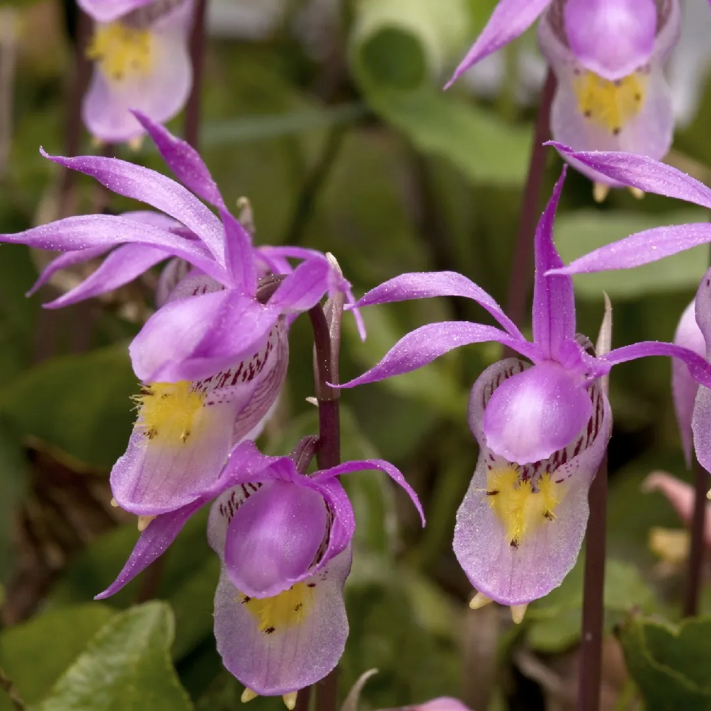
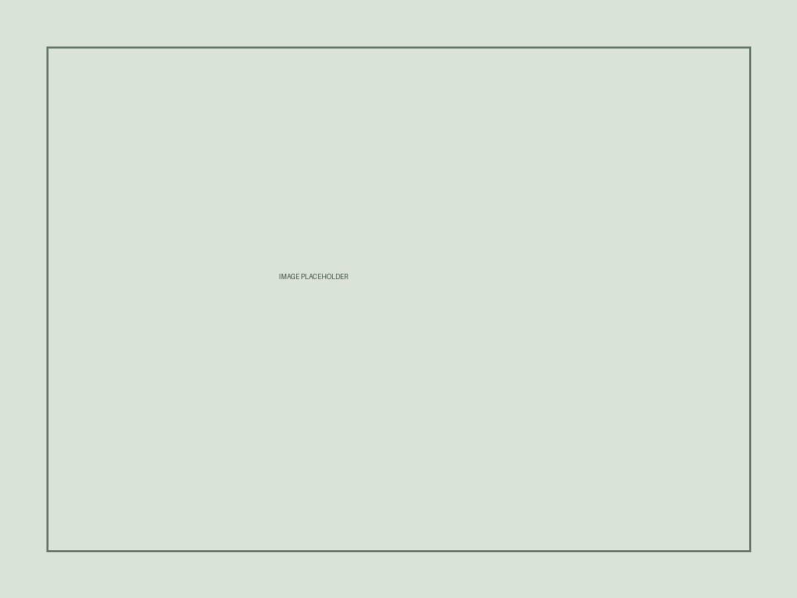
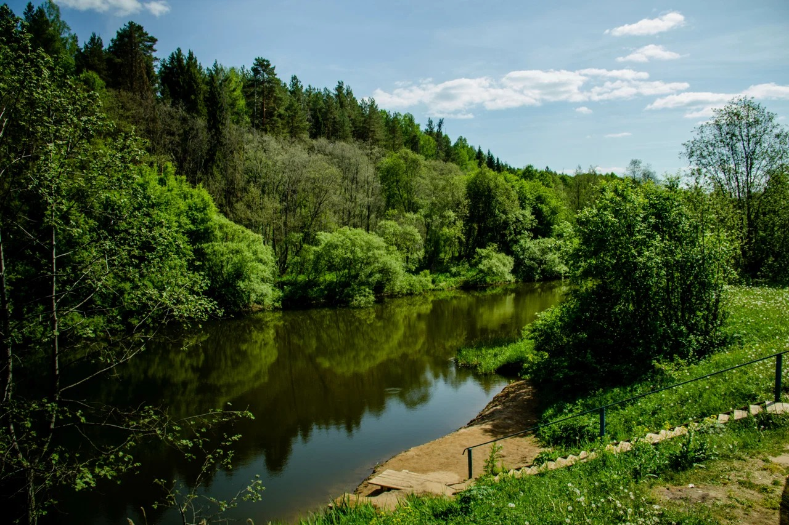

Flora
Rare plants
Lady's slipper, Calypso orchid and bird's-nest orchid are associated with damp, shady forests.
Research team
We collected observations about rare species, their habitats and the main threats to the Kirov Region ecosystem.
Detailed observations of rare species and ecological challenges.

Lady's slipper, Calypso orchid and bird's-nest orchid are associated with damp, shady forests.

White-tailed eagle, lesser spotted eagle, Ural owl, beaver, garden dormouse and Apollo need protected habitats.

Habitat loss, pollution, illegal hunting and excessive tourism pressure disturb the natural balance.
Key information about the natural area and its characteristics.
Rare animals, birds and plants that make this territory unique.
A large red-list butterfly with translucent wings and bright red spots. Found locally in pine forests of the region.
A rare forest bumblebee protected regionally. The main pollinator of unique local orchids.
A secretive nocturnal animal. Builds complex underground towns in dry sandy hills among the coniferous forest of Nizhne-Ivkino.
A huge predator with a wingspan of up to two and a half meters. Nests on the tops of old century-old trees near water bodies.
A rare owl species that lives in the coniferous and mixed forests of the Ivkina River valley. Protected and monitored in the region.
A rare feathered predator that hunts wild wasps and bumblebees, digging up their underground nests on forest edges.
The rarest wild orchid of the taiga with large yellow-purple flowers. Grows on calcium-rich soils of the resort area.
A tiny northern orchid resembling a fairy-tale flower. Found only in remote, untouched mossy spruce forests.
A beautiful aquatic plant listed in protection registers. Decorates quiet backwaters and oxbows of the Ivkina River.